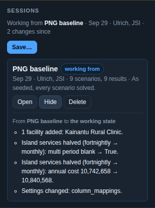

05 · Keep it
Stays with the government after the consultant leaves
Runs on a laptop with no internet. Saves the whole working state under a name and reopens it exactly. Exports the entire model as a spreadsheet with the same columns it imports, so the work survives the tool.
Sessions

Run it yourself
Two commands. The interface is committed already built, because requiring a toolchain to see a map in a provincial health office would contradict the point.
git clone https://github.com/ulrichmonthe/Supply-chain.git cd Supply-chain && make install && make run # then open http://localhost:8000
| Where | What |
|---|---|
| A laptop | Everything. Python, a bundled solver, a local database that upgrades itself in place. No internet needed once installed; the map has an offline land mask. |
| This site's demo | The illustrative workspace with every scenario pre-solved for every month. Read-only; anything that needs the solver or writes says so. |
| The spreadsheet | The whole model in the template's columns. The way out that never needs the application. |
Licence, pricing, support
To be published. The source is open to read at GitHub; the licence position and the engagement model are being settled and will appear here.